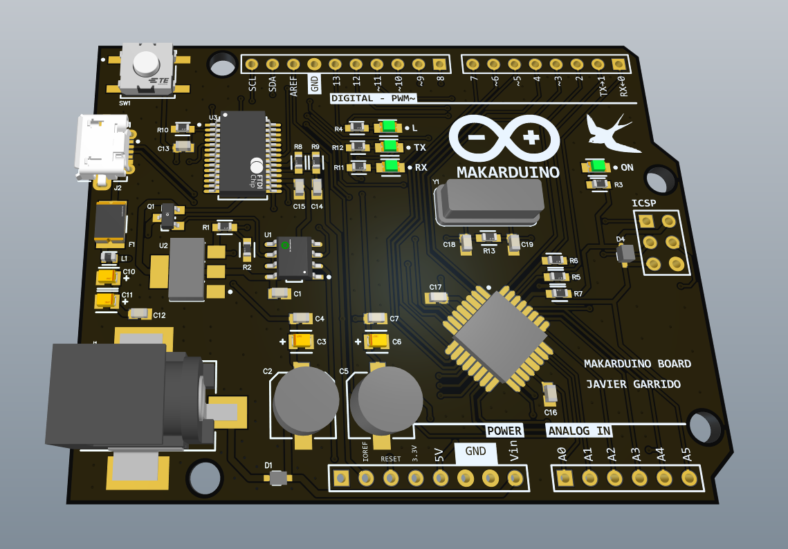
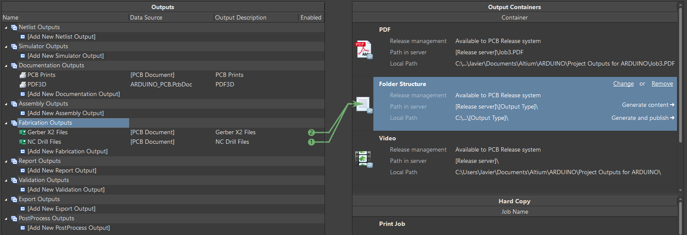

MAKARDUINO
Make your own Arduino.
Description
In this project, I'll be explaining how I have build my own Arduino UNO board, which works exactly the same as the original, so that you can
build your own board too if you wish! Let's get started. In the next picture, you can see the physical aspect of the finished board:
As you can see, it has some differences from the original, like the black and white board design, micro USB port, white LEDs and some logos, among other things.
To begin with, Arduino UNO is a microcontroller board which is based on the ATmega328P chip. It's really easy to use for starting new projects, or simply for testing. It has some digital I/O pins (including PWM output signals), some analog input pins, a USB connection, an external power jack and offers you voltages of 5 V and 3.3 V. In this project, I've made my own Arduino UNO board and named it MAKARDUINO, and I will show you how to make your own board. It's important to say that Arduino is open-source hardware, so you can buy and use all the components and make your own board and call it as you want. Also, once you know how the Arduino schematic works you can build your own boards using the ATmega microcontroller.
Components
In the first place, we must know the components we need in order for the board to work. All of them are good and really low cost components. Obviously, we need the ATmega328P microcontroller. We can have it in the PU format, which is larger, is soldered as a THD component and lets you introduce it in a socket, so that you can replace it, or in the AU format, which is smaller and must be soldered as a SMD component. I have used the AU format for my design.
In addition, the microcontroller needs more components in order to work properly. Firstly, it needs a supply of 5 V, very well regulated, and for that we'll be using the NCP1117 voltage regulator, along with several capacitors. Also, the microcontroller works at 16 MHz, so it needs a 16 MHz crystal oscillator, along with two 22 pF capacitors to oscillate adequately.
Moreover, the board needs an FTDI chip (FT232RL) to make the connection between the microcontroller and the USB, and it also needs the micro USB plug, the reset push button, some male and female pins, some capacitors and resistors, LEDs, the power jack, some diodes and some operational amplifiers (LM358D) and a P-channel MOSFET (FDN340P) for the supply part.
Schematic
The schematic of my board can be seen in the next picture. In order to create the schematic and the PCB designs I've used Altium Designer.
To start with, let's focus on the supply part. There, we can receive the +5 V from the external power jack or from the USB. From the USB, we take the D+ and D- signals to exchange data between the microcontroller and the computer, and also take the VBUS signal, which has 5 V, and take it to the drain of the P-channel MOSFET after passing through a fuse and a low pass filter composed by an inductor and some capacitors. On the other hand, from the power jack, which must be connected to a range between 7 V and 12 V, we take the signal and, after a diode to prevent inverse polarity, it passes through some capacitors and the 5 V voltage regulator. The same signal from the power jack is taken to a voltage divider and it is compared to a 3.3 V signal with the LM358D operational amplifier, and the output goes through a voltage follower, so that if the input is higher than 3.5 V (the minimum value it can take when the power jack is connected) the output of the operational amplifier is +5 V and the P-channel MOSFET is open so that the 5 V don't come from the USB. However, if the power jack is unconnected, the output of the operational amplifier will be 0 V so that the P-channel MOSFET closes up and the 5 V come from the USB. Also, you can connect the voltage between 7 V and 12 V through the Vin signal, bearing in mind it has to have the correct polarity.
Now, we move on to the FTDI part. In my design, I have used the FT232RL to make the UART communication between the microcontroller and the USB. Alternatively, you can use the CH340 chip, checking its datasheet conveniently to make the connections. From the FT232RL, we take the RX and TX pins to make the UART communication with the microcontroller and receive de D+ and D- signals from the USB. Also, we connect two LEDs to the CBUS0 and CBUS1 pins to know when the data is transmitted through RX and TX pins. Moreover, we connect the DTR pin to the RESET of the microcontroller, which is a handshake signal. Focusing on the supply part of the FT232RL, we connect the VCC and VCCIO pins to +5 V and connect the RESET pin to a pull-up resistor (I put two resistors in parallel to make a smaller one) and to a capacitor to ground, so that the FT232RL receives a logic '0' during the time the capacitor charges up through the resistors. Finally, we take the 3.3 V output signal that the FT232RL chip offers for the supply part and as an output pin, and filter it with a 1 uF capacitor.
Lastly, we focus on the ATmega328P microcontroller. First of all, we connect the VCC and AVCC pins to +5 V and filter those signals with a 470 nF capacitor to ground. Also, we connect the AREF signal to ground with a 100 nF capacitor. Besides, we connect the RESET pin to a pull-up resistor, to the DTR signal and through the reset button to ground, since it resets the microcontroller when receiving a logic '0'. On the other hand, it is necessary to connect the 16 MHz crystal oscillator to the XTAL1 and XTAL2 pins, along with two 22 pF capacitors so that it oscillates properly. Finally, we take the I/O pins from the microcontroller to the outside in order to make the analog and digital pin strips, the supply pins, the I2C pins and the SPI pins. We finally connect two LEDs to +5 V and to the SCK signal of the microcontroller, respectively.
PCB - Printed Circuit Board
The last step to finish the Arduino board is to design the PCB or Printed Circuit Board. First, we make the shape of the board, according to the original shape of the Arduino UNO shape in my case, but you can make it with the shape you prefer. Also, we make the drills on the board. After delimiting the shape of the board, we place the components in a convenient way, starting with the bigger components, such as the microcontroller, the FTDI, the oscillator or the power jack, and following with the smaller components, like capacitors and resistors.
After that, we have to route the different tracks that connect all the pins of every component on the board. The width of the tracks I've used has been 16 and 24 mils for the power tracks and 10 and 12 mils for the microcontroller and the rest of the signal tracks.
Once all the necessary tracks have been traced, using both the top layer and the bottom layer, a final step is performed, which consists of making a ground plane. This consists of pouring copper onto the entire board so that the tracks connected to the GND network merge into that pour and the tracks that are different are separated from the pour. Also, to assist dissipation and increase connectivity between the two layers of the PCB, a series of vias have been made throughout the PCB, so that the GND pour is attached at many points in the two layers. Finally, it only remains to place the names of each of the components and of the pads so that they are seen correctly. In addition, a series of indications have been added, which are the logos, the author's name and the device name, on both layers.

Gerber files
After the complete design of the PCB, we proceed to the generation of the Gerber files from Altium Designer, including the drill information. These files contains the necessary information for the manufacturing of the PCB, and will be used to order it, in my case, to JLCPCB. I've used the standard Gerber X2. You can see the generation of these files from the program in the next picture:

PCB soldering
Using the Gerber files we previously generated, we can order the PCB. In my case, I have ordered it to JLCPCB company. I ordered five different boards of my PCB design, as you can see in the next picture:
For the soldering part, I've used a soldering station with very small soldering tips and some tweezers to place the components. It's also important to use flux and, for small components, to use very thin solder wire. To make the task easier, I have also used a digital microscope so as to see easily the component pads placement and to see whether the soldering of each component was right. First of all, we place and solder the smaller components on the board, which are resistors, capacitors, inductors, diodes, LEDs and the fuse. After that, we continue soldering bigger components in a progressive way, going on with the MOSFET, the oscillator, the voltage regulator, the operational amplifier, the USB connector, the push button and the power jack, leaving for last the FTDI and the microcontroller, which are the most difficult and important components to solder on the board. Finally, we end up soldering the pin strips on the board. You can see the final result of the soldering part in the picture below. Also, there's a video where you can observe how I solder one pad of one of the components.
After soldering everything on the board, we have to make sure there are no shorts and we need to check the conductivity between the different tracks before powering it, to avoid damaging any component. After checking that, we can now power the board and prepare for burning the bootloader on the microcontroller.
Burn the bootloader
Now, if the microcontroller is a virgin chip, it won't have the bootloader. To burn the bootloader in your virgin microcontroller, you will need to make an SPI connection between your board and an Arduino UNO board, joining the SCK, MISO, MOSI, 5 V and GND pins and the SS pin from the Arduino UNO board to the RESET pin of your board. You've got all these pins in the ICSP port of your board.
Then, connect your Arduino UNO board to your PC. Open the Arudino IDE and go to File > Examples > Arduino ISP > Arduino ISP and open that example. Then go to Tools > Board and select the Arduino UNO board and go to Tools > Port and select the COM port of the Arudino UNO board. Now select Tools > Programmer > Arduino as ISP. After that, upload the code we've opened before to your Arduino UNO board and, finally, go to Tools > Burn Bootloader. Now, the LEDs of both boards will start to blink quickly. When the process is done, you will receive the message of Done burning bootloader, and that means your board is ready to work.
Uploading the first program
Once we have burnt the bootloader, the microcontroller can communicate through the UART to the USB and we can upload a code from our computer. So, I connect my MAKARDUINO board to my computer through the USB and, for example, I will upload a simple code to blink two LEDs, one on the board itself and an external one. You can see the code and the result in the image and the video below.
And that is all. I hope you enjoyed it and found it useful. I will let you the links to the schematic, the PCB tracks and the Gerber files of my MAKARDUINO board, so you can build your own Arduino board if you wish!
► Download Schematic
► Download PCB tracks
► Download Gerber files